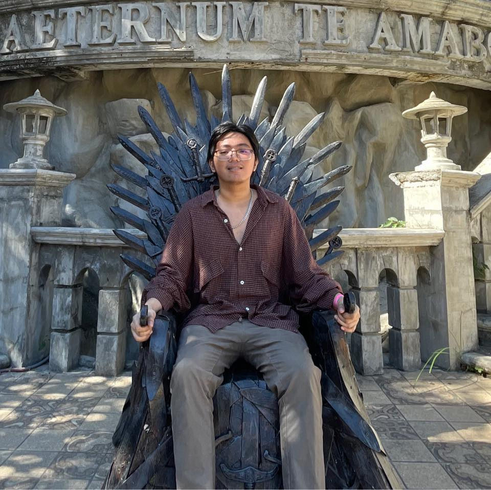

Researchers

Jon Karlo R. Catacutan
IV - BS Geodetic Engineering
Researcher
Marc Andrei T. Cumbe
IV - BS Geodetic Engineering
Researcher
Advisers

Assoc. Prof. Czar Jakiri S. Sarmiento, Ph.D.
Deputy Executive Director, National Engineering Center
Thesis Adviser
Asst. Prof. Luis Carlos S. Mabaquiao, M.Sc.
Faculty, Department of Geodetic Engineering
Thesis Co-adviser